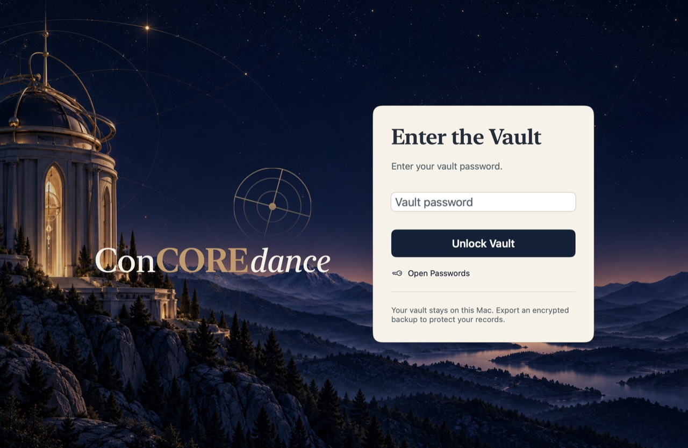
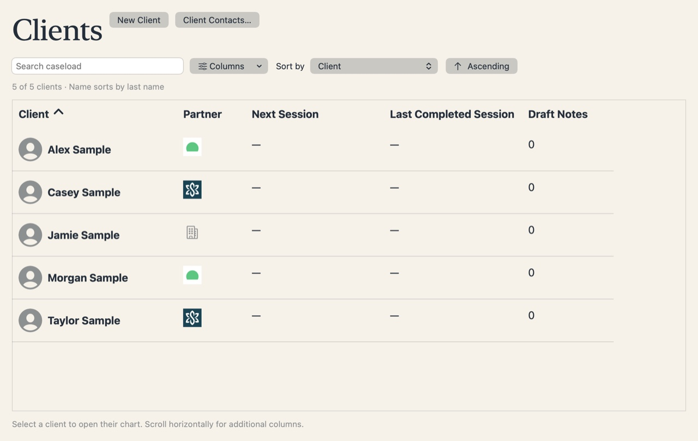
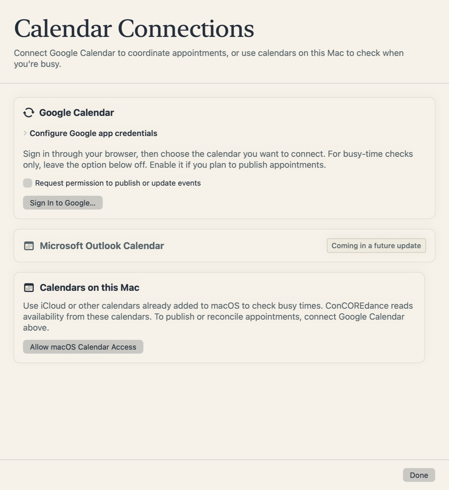

Harmony in Complexity
Harmony in Complexity
Bring records in.
Print, open or import PDFs into an encrypted review tray. Preserve the original document.
Native macOS · Private beta development
A calm workspace for keeping the clinical record under the therapist’s control. Bring the documents together, follow the thread of care, and keep a readable way out.
In development. Clinical acceptance and independent review remain in progress.

“The clinical record should belong to the clinician.”
Latest checkpoint · Nov 17, 2026Caseload clarity. Partner choice. Standalone recovery.
Read the development record01 /The clinical workspace
Client records, assessments, reviewed notes and original documents share one local workspace. The atmosphere supports the work; readable surfaces and deliberate review keep the work in focus.
Print, open or import PDFs into an encrypted review tray. Preserve the original document.
Choose the client and category. Continue onboarding and the linked BPS assessment.
Use reusable note templates, review drafts, and deliberately finalize or amend a record.
Create complete encrypted backups locally and export readable notes, structured data and originals.


All displayed client records are synthetic. Earlier previews and concepts are available in the visual asset library.
02 /Record ownership
The product’s foundations are practical: keep the record accessible, preserve what was authored, and make leaving possible.
Explore the design doctrineThe core record lives in an encrypted vault on the Mac. Access to clinical memory should not depend on a continuing subscription.
Templates and draft assistance support documentation. Deliberate review, signature snapshots and linked amendments preserve clinical authorship.
Complete backups include original documents. Readable packets and structured exports make record ownership more than a promise.
Therapist and client choose the billing/admin association. Change it later, use a custom partner, or leave it unassigned.
03 /Development, in the open
Working features, acceptance checks and future ideas have different meanings. The roadmap keeps those boundaries visible, with the archive preserving the evidence behind them.
Encrypted vaults, client management, BPS assessments, custom templates, signatures, caseload tools, backups and portable packets.
Native Touch ID and live audio, independent recovery and security review, accessibility, and durable signed distribution.
Partner-specific documentation profiles, shared-practice identities and broader import and provider integrations.
The product’s memory is part of the product.
Follow the decisions, implementation records and visual evolution of ConCOREdance. Historical entries stay intact; current-state notes explain what has changed.